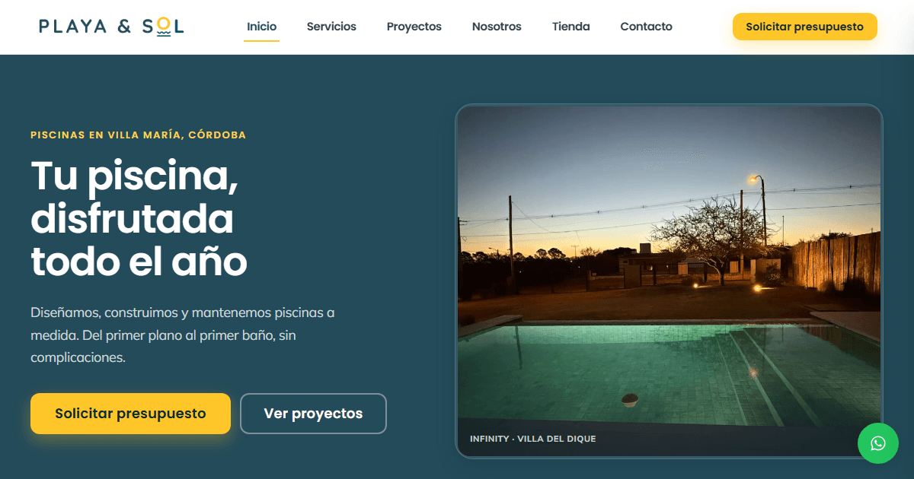

Live in production
Playa y Sol Piscinas · Corporate site
React
TypeScript
Tailwind CSS
Vite
Vercel
A modern corporate website for a company with over 30 years building pools. Responsive design, a product catalog, WhatsApp integration, and SEO tuning — all built around turning visitors into customers.